Saki Ji personal website, where you can see a selection of Saki ji's works & is an independent designer and artist working in graphic design, book design, and community design. saki's concept focuses on discovery in life.

One of the best features of his little yellow house is that it is small. As it was so small when I walked into the alleyway and around the building, I only found it in the back shade. Walking along Yanqing Road, many of the buildings along the road are recognised as excellent historical buildings in Shanghai in the modern era. With camera in hand and through the imaging hole, I caught a glimpse of the dark green iron skeleton door of the noodle shop adjacent to it, which was open to the sweeper's uncle coming out of it, dragging that big rubbish bag and sweeping the leaves. I walked in past him and looked at the alleyway called Lane 110. The alleyway was typical of old-fashioned lanes. Wall climbers were twisting around the houses in the alley. One doorway was next to another and the low buildings were close together. Two birds chirp incessantly at the entrance of the alleyway. This kind of dwelling, which evolved from the traditional residential quadrangle, has the advantages of saving land and low cost, and is popular with the lower and middle classes. And his house can be said to be independent of this area of houses, hidden deep in the alleyway. It's more like a utility room that has been tidied up. This is justifiable, as he is paid 8,000 yuan a month for his work from 5 to 12 every day, and it is nice to have a place to live in the middle of the city. He must be a man who loves life, I would say, because the first time I saw his house I was attracted by the bright colours. The yellow facade and the blue coloured steel eaves are a clear contrast to the white and grey light-coloured surroundings. Although the house is in the corner. Yet it was very conspicuous. The house gave off a vibrant feeling like the work clothes he often wore. It was his second year out of university and his first job was as a takeaway boy when he came to Shanghai as soon as he graduated. He started out as a young man, but now he knows his way around the city centre, both big and small. This house has always been with him. He has also been with this house.